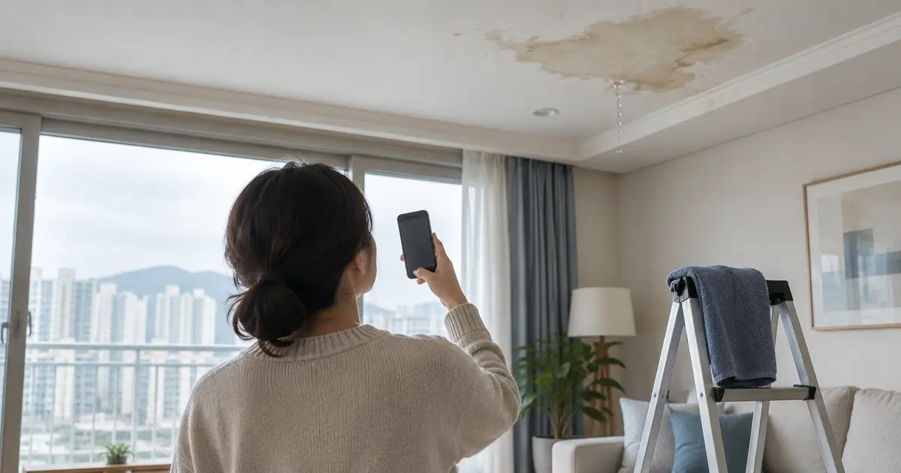
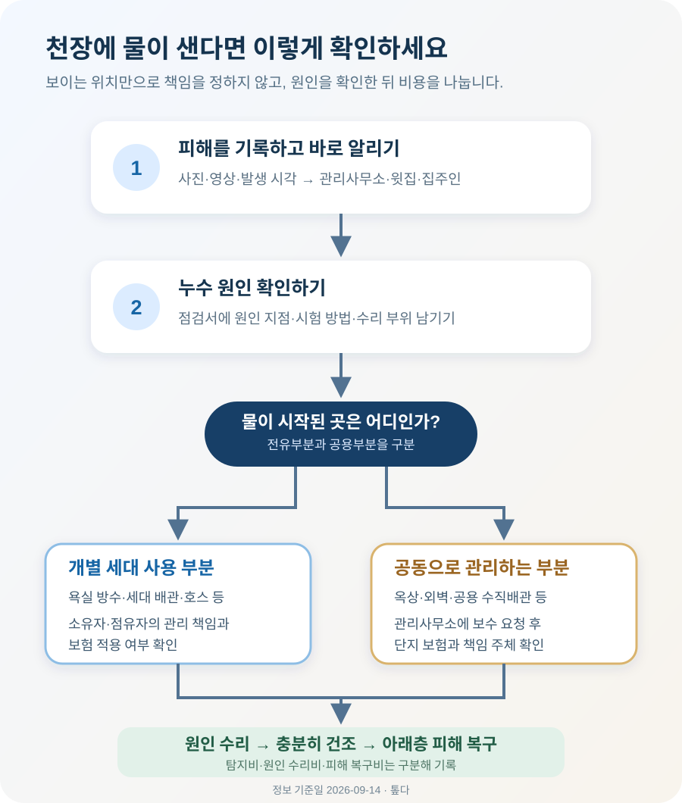

아파트 누수, 윗집이 무조건 수리비를 내야 할까?

천장에 물이 샌다면 사진을 남기고 관리사무소와 윗집에 동시에 알리되, 비용 이야기는 누수 원인이 확인된 뒤에 하세요. 윗집 욕실·배관에서 시작됐다면 윗집 쪽 책임이 문제될 수 있지만, 외벽·옥상·공용배관에서 들어온 물이라면 관리주체가 확인해야 합니다. 세입자는 원인과 무관하게 자기 집주인에게도 바로 알려야 합니다.
처음에는 범인을 찾기보다 피해가 번지는 모습을 남기세요
거실 천장이 젖거나 벽지가 부풀면 누구나 윗집부터 떠올립니다. 하지만 물은 배관과 슬래브를 따라 옆으로 이동합니다. 실제로 물이 떨어진 지점과 물이 시작된 지점이 다를 수 있으므로, 첫 통화부터 “윗집이 물어내라”고 단정하면 원인 조사부터 꼬이기 쉽습니다.
먼저 천장 전체와 얼룩 가까운 모습을 각각 촬영하세요. 사진에는 촬영 시각이 남도록 하고, 물방울이 떨어진다면 짧은 영상도 보관합니다. 젖은 가구·가전·바닥이 있다면 버리거나 닦기 전에 피해 범위를 함께 찍습니다. 비가 올 때만 생기는지, 윗집에서 욕실이나 세탁기를 쓴 뒤 심해지는지도 메모해 두면 조사 범위를 줄일 수 있습니다.
그다음 관리사무소에 누수 위치와 시작 시각을 알리고 윗집에도 점검 협조를 요청합니다. 전세나 월세로 살고 있다면 집주인에게 같은 사진과 접수 내용을 보냅니다. 당장 물받이를 두거나 젖을 물건을 옮기는 조치는 하되, 원인을 모르는 상태에서 천장 도배부터 새로 하면 다시 젖을 수 있습니다.
천장이 젖었다는 사실만으로는 원인을 알 수 없습니다
관리사무소는 먼저 같은 동의 공용배관·옥상·외벽 관련 신고가 있었는지 확인하고, 필요하면 윗집과 피해 집을 함께 살펴봅니다. 여기서 명확하지 않다면 누수 탐지업체가 급수관 압력, 욕실 방수, 배수관, 난방관 등을 나누어 점검할 수 있습니다. 누구에게 비용을 청구할지보다 어떤 시험에서 어느 부분의 이상이 확인됐는지를 기록으로 남기는 것이 먼저입니다.
점검 결과에는 적어도 누수 추정 지점, 확인한 시험, 수리가 필요한 부분, 공용부분인지 개별 세대가 사용하는 부분인지가 적혀 있어야 합니다. “윗집 쪽에서 샌 것 같다”는 말만으로 공사를 시작하면 수리 뒤에도 책임을 두고 다툴 수 있습니다. 관리사무소 접수 기록, 업체 점검서, 수리 전후 사진을 한 묶음으로 보관하세요.
| 나타나는 모습 | 먼저 확인할 가능성 | 바로 단정하면 안 되는 이유 |
|---|---|---|
| 윗집 욕실 아래 천장이 젖음 | 욕실 방수층·급배수 연결부 | 외벽이나 공용배관의 물이 슬래브를 타고 번질 수도 있음 |
| 비가 많이 올 때만 외벽 쪽에 얼룩 | 외벽 균열·창호 주변·옥상 | 창호 실리콘처럼 세대가 관리할 부분도 함께 살펴야 함 |
| 물을 쓰지 않아도 계량기가 움직임 | 세대 급수관 | 계량기 전후 어느 구간인지에 따라 관리 범위가 달라질 수 있음 |
| 욕실 배수 때 아래층에서 물이 샘 | 배수 연결부·방수층 | 공용 수직배관과 세대 연결부를 구분해야 함 |
비용은 ‘어디에서 보였나’가 아니라 ‘어디에서 시작됐나’로 나뉩니다
윗집 세대가 단독으로 사용하는 배관·욕실 방수층·세탁기 연결부 등에서 문제가 생겼다면 그 시설을 소유하거나 관리하는 쪽의 책임을 검토합니다. 반대로 옥상, 건물 외벽, 여러 세대가 함께 쓰는 배관처럼 공용부분이 원인이라면 관리주체와 입주자대표회의에 보수와 피해 처리를 요청할 수 있습니다. 어느 부분이 공용인지 전유부분인지는 배관이 지나가는 위치 하나만이 아니라 구조, 용도, 관리규약과 실제 사용관계를 함께 봅니다.
서울지방법원 동부지원 2000. 2. 17. 선고 99가단22374 판결에서는 공용부분인 외벽에서 들어온 빗물이 위층 바닥 슬래브를 타고 아래층 천장에 나타난 사안을 다뤘습니다. 법원은 누수가 위층 아래에서 보였다는 이유만으로 위층 전유부분의 하자라고 보지 않았습니다. 오래된 판결이지만 “피해 위치만 보고 윗집 책임으로 정할 수 없다”는 점을 이해하는 데 도움이 됩니다.
집합건물법 제6조는 전유부분이 다른 전유부분이나 공용부분과 맞닿은 곳에서 생긴 건물의 하자는 공용부분에 존재하는 것으로 추정하도록 정합니다. 다만 이것만으로 모든 누수 비용을 관리사무소가 부담한다는 뜻은 아닙니다. 실제 원인 조사 결과와 관리규약, 수리 대상과 손해 발생 경위를 함께 확인해야 합니다.
| 확인된 원인 | 먼저 수리를 요청할 곳 | 피해 복구비를 논의할 상대 |
|---|---|---|
| 윗집의 세탁기 호스·수전 사용상 문제 | 윗집 점유자 | 윗집 점유자와 가입 보험사 |
| 윗집 전유부분의 노후 배관·욕실 방수 | 윗집 소유자 중심으로 확인 | 소유자·점유자의 관리 책임과 보험 적용 여부 확인 |
| 옥상·외벽·공용 수직배관 | 관리사무소·관리주체 | 관리주체 또는 책임 주체와 단지 보험 확인 |
| 피해 세대 내부의 결로·창호·자체 배관 | 피해 세대 소유자 또는 집주인 | 자기 집 수리 문제로 처리 |
세입자는 원인을 찾기 전이라도 집주인에게 바로 알려야 합니다
세입자가 사는 집 천장에서 물이 샌다면 관리사무소에만 접수하고 끝내지 마세요. 민법 제634조는 임차물에 수리가 필요하거나 권리를 주장하는 사람이 생기면 임차인이 임대인에게 지체 없이 알리도록 정합니다. 사진, 누수 시작 시각, 관리사무소 접수 결과를 집주인에게 문자나 메신저로 보내면 통지 시점도 남길 수 있습니다.
건물이나 설비가 낡아 정상적인 거주가 어려워진 경우에는 임대인의 수선의무가 먼저 문제됩니다. 민법 제623조에 따르면 임대인은 계약 기간 동안 임차인이 집을 사용·수익할 수 있는 상태를 유지할 의무가 있습니다. 다만 세입자가 세탁기 호스를 잘못 연결했거나 시설을 파손한 것이 원인이라면 세입자의 책임이 따로 검토될 수 있습니다.
집주인과 연락이 늦어진다고 큰 공사를 먼저 계약하는 것도 조심해야 합니다. 물받이 설치나 가구 이동처럼 피해 확대를 막는 조치를 하고, 수리가 시급하다면 관리사무소의 확인 내용과 견적을 집주인에게 보내 승인과 비용 처리 방법을 남기세요. 실제로 누가 부담할지는 고장 원인, 계약 내용, 수리의 필요성과 긴급성에 따라 달라질 수 있습니다.
원인을 고치는 비용과 아래층을 복구하는 비용은 따로 적으세요
누수 분쟁에서는 비용을 한 덩어리로 말해 오해가 생깁니다. 누수 탐지비, 물이 새는 배관이나 방수층을 고치는 비용, 아래층 천장·도배·가구를 원상 복구하는 비용은 서로 다른 항목입니다. 보험에서도 원인 시설 자체의 수리와 제3자인 아래층에 생긴 손해를 다르게 다룰 수 있습니다.
예를 들어 아래층 거실 천장에 얼룩이 생겨 윗집 욕실을 점검했고, 배수 연결부에서 누수가 확인됐다고 가정해 보겠습니다. 이때는 점검 결과와 원인 부위 수리 내역을 먼저 확정합니다. 그 뒤 아래층은 천장이 충분히 마른 것을 확인하고 도배 범위와 젖은 물건의 복구 가능 여부를 협의합니다. 원인 수리 전에 도배부터 하면 같은 자리를 두 번 고칠 수 있습니다.
- 누수 탐지비 — 무엇을 확인하기 위한 조사였고 실제 원인이 어디에서 발견됐는지 적습니다.
- 원인 부위 수리비 — 배관·방수·호스 등 물이 새기 시작한 부분을 고친 비용입니다.
- 피해 복구비 — 아래층 천장, 벽지, 마루, 가구처럼 물 때문에 손상된 부분의 비용입니다.
- 피해 확대 방지비 — 건조, 임시 보양 등 추가 손상을 막기 위해 필요했던 조치인지 확인합니다.
복구 견적은 손상 전 상태로 되돌리는 범위를 중심으로 받습니다. 천장 일부 얼룩을 이유로 집 전체 인테리어 비용을 청구하거나, 반대로 눈에 보이는 도배만 하고 젖은 바탕과 곰팡이 가능성을 무시하면 합의가 어려워집니다. 수리 전 사진, 두 곳 이상의 견적, 영수증을 남기고 범위를 서면으로 맞추는 편이 안전합니다.

‘일배책이 있다’는 말만 듣고 공사부터 시작하지 마세요
윗집이 일상생활배상책임보험 특약에 가입했다면 아래층에 생긴 손해가 보상 대상인지 보험사에 접수해 볼 수 있습니다. 흔히 ‘일배책’이라고 부르는 이 특약은 다른 사람에게 법률상 배상해야 할 손해를 보장하는 구조입니다. 그러나 가입 시기와 약관, 피보험자, 사고가 난 주택, 누수 원인에 따라 결과가 달라지므로 가입 사실만으로 보상을 단정할 수 없습니다.
특히 아래층 도배와 가재도구 피해 같은 제3자 손해와 윗집의 낡은 배관 자체를 교체하는 비용은 같은 항목이 아닐 수 있습니다. 자기부담금과 누수 탐지·원인 수리비 보장 여부도 계약마다 다릅니다. 가능하면 철거 전에 보험사에 사고를 접수하고 필요한 사진, 점검서, 견적과 공사 전 확인 절차를 물어보세요.
가입한 보험을 기억하지 못한다면 생명보험협회와 손해보험협회가 운영하는 내보험찾아줌에서 계약 목록을 확인할 수 있습니다. 다만 목록에 보험이 보인다고 누수 보장까지 확인되는 것은 아니므로 해당 보험사에 증권과 특약명, 사고 주택의 보장 여부를 다시 문의해야 합니다. 피해 집도 자기 주택보험에 급배수시설 누출 손해 같은 담보가 있는지 함께 확인할 수 있습니다.
원인 조사부터 거부한다면 요청한 내용을 날짜순으로 남기세요
윗집이나 관리사무소가 서로 책임을 미룬다면 먼저 “누가 배상하라”는 요구보다 공동 점검 날짜를 정해 달라고 요청하세요. 피해 사진, 관리사무소 접수번호, 윗집에 보낸 메시지, 업체 점검서, 견적서를 날짜순으로 정리합니다. 전화로 합의한 내용도 통화 뒤 “오늘 확인한 내용은 이렇습니다”라고 문자로 다시 남기면 서로의 기억이 달라지는 일을 줄일 수 있습니다.
공용부분 여부나 관리비 부담을 두고 단지와 다툰다면 국토교통부 산하 중앙 공동주택관리 분쟁조정위원회의 자가진단을 통해 조정 대상인지 확인할 수 있습니다. 세대 간 손해배상까지 포함되는지는 분쟁 내용과 관할에 따라 달라질 수 있으므로 신청 전에 상담으로 확인하세요.
누수가 계속돼 손해가 커지는데도 점검이 이뤄지지 않거나 피해 금액과 원인을 두고 주장이 크게 다르면, 확보한 자료를 들고 법률 전문가에게 개별 검토를 받는 편이 낫습니다. 민법 제750조의 불법행위 책임이나 제758조의 공작물 책임은 원인과 관리 주체, 과실 여부를 구체적으로 따져 적용되기 때문입니다.
오늘 바로 확인할 것
- □ 천장 전체, 얼룩 가까운 모습, 젖은 물건을 사진과 영상으로 남겼다.
- □ 비가 올 때나 욕실·세탁기 사용 뒤 심해지는지 시간을 적었다.
- □ 관리사무소와 윗집에 같은 날 알리고 접수 내용을 보관했다.
- □ 세입자라면 집주인에게 사진과 관리사무소 답변을 보냈다.
- □ 점검서에 원인 지점, 확인 방법, 전유·공용부분 판단이 적혀 있다.
- □ 원인 수리 전 천장 도배부터 계약하지 않았다.
- □ 탐지비·원인 수리비·피해 복구비를 구분해 견적을 받았다.
- □ 보험사에 공사 전 필요한 증빙과 자기부담금을 확인했다.
- □ 통화·방문·점검·수리 내용을 날짜순으로 모았다.
공식 자료 및 판결
- 국가법령정보센터 — 민법 제623조(임대인의 의무)
- 국가법령정보센터 — 민법 제634조(임차인의 통지의무)
- 국가법령정보센터 — 집합건물법 제6조(건물의 설치·보존상의 흠 추정)
- 국가법령정보센터 — 서울지방법원 동부지원 99가단22374 판결
- 국가법령정보센터 — 민법 제750조(불법행위)
- 국가법령정보센터 — 민법 제758조(공작물 등의 점유자·소유자 책임)
- 국토교통부 중앙 공동주택관리 분쟁조정위원회 — 자가진단·조정 신청
- 생명보험협회·손해보험협회 — 내보험찾아줌
정보 기준일: 2026-09-14. 이 글은 공동주택 누수 발생 때 확인할 일반적인 순서를 설명한 정보이며 개별 법률·보험 자문이 아닙니다. 실제 비용 부담은 누수 원인, 시설의 소유·관리 관계, 임대차계약, 관리규약, 당사자의 과실과 보험 약관에 따라 달라집니다. 원인이 불분명하거나 손해가 크면 현장 점검자료를 바탕으로 관리주체·보험사·법률 전문가에게 확인하세요.
입주 뒤 집 상태를 확인할 때 같이 쓸 자료
- 이사 당일 체크리스트입주 전 시설 상태와 계량기 사진 남기기
- 톺다 게시판개인정보를 제외하고 비슷한 누수 경험 나누기